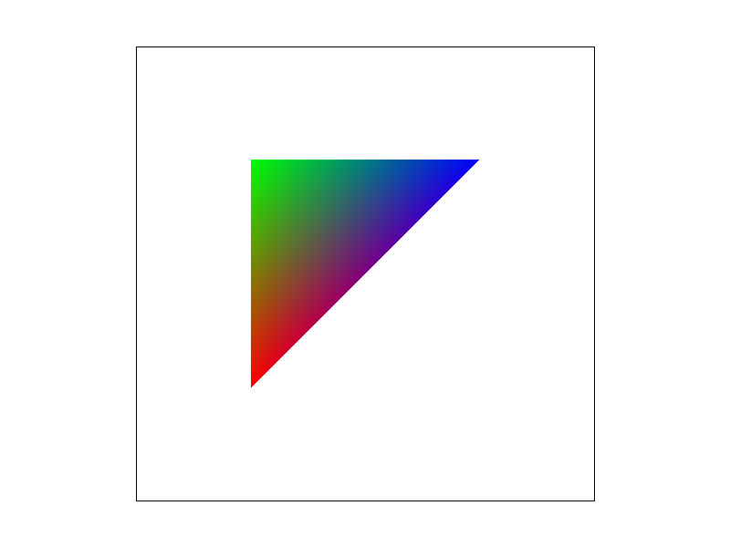

Overview
In our study of computer graphics, we explore the topic of rasterization. We delve into optimizing rendering techniques, starting with an efficient approach to triangle rasterization that improved performance. We explored supersampling for antialiasing, demonstrating its effectiveness in enhancing visual smoothness. Our creative abilities were tested in transforming SVG images into dynamic visuals. We also investigated barycentric coordinates for color blending, and compared pixel sampling methods for texture mapping, identifying the superior quality of bilinear sampling. Lastly, we analyzed level sampling to balance rendering speed, memory use, and antialiasing quality. This project not only advanced our technical skills but also our capacity to apply complex rendering strategies for improved visual outcomes.
Section I: Rasterization
Part 1: Rasterizing single-color triangles
Triangle rasterization is fundamental part of the GPU rendering pipeline. In our rasterizer, the computation is performed by establishing the AABB (axis aligned bounding box) of the triangle and iterating through each pixel in the area. For the coordinate of each pixel we compute whether that point lies within the triangle. This is done evaluating the orientation of the coordinate with respect to each edge of the triangle. We ensure that the ability to rasterize a triangle is independent of its winding order by verifying our point is oriented left or right of every edge.
Part 2: Antialiasing triangles
Supersampling is a means of increasing the sample rate of a signal. Doing this to a high frequency signal helps mitigate aliasing. When we are trying to rasterize very small or narrow triangles, or sampling a texture with a very high frequency relative to our sample rate, aliasing artifacts manifest. To implement supersampling we sampled across a uniform N*N grid inside of each pixel in the framebuffer. We maintain a sample buffer with dimensions W*N, H*N (where W and H are the framebuffer’s width and height respectively) and populate it with sample data before downsampling to the dimensions of the framebuffer. The process of downsampling is that of taking the average color of every sample in the grid corresponding to a pixel. Resizing the frame and sample buffer with the resizing of the window, as well as downscaling the sample buffer to fit the framebuffer after rasterizing all the geometry was vital to implementing supersampling. Finally, with supersampling implemented, the evil jaggies be gone!
Here we see our enemy the jaggies! A very high frequency signal which with our comparatively low sample rate gives the notion that the top piece of the triangle is disconnected from the base. However as we increase the sample rate, we approach a better representation of the area the triangle really occupies.
Part 3: Transforms
Our little cubeman thickened up his arms and legs a little bit and struck a pose! We have transformed his components, including rotating his head and lower arms, non-uniformly scaling both his upper and lower arms and legs, and translated his lower arms to have him strike a pose
Section II: Sampling
Part 4: Barycentric coordinates
The prefix “bary-” means weight or pressure. A way to understand barycentric coordinates is as a means of representing a point as the weighted sum or two or more points. Particularly intuitive about their definition is that the weighted sum totals to 1 so each coordinate of a barycentric coordinate system can be thought of as the percent weight or contribution of a point. In the rendering above, you can attribute the colors, red, green, and blue to the bottom, top-left, and top-right of the triangle respectively. Notice how closer to the vertex, the greater its weight and thus the closer the fragment is to the color of its nearest vertex.

Part 5: "Pixel sampling" for texture mapping
Texture mapping was achieved using barycentric interpolation between the texture coordinates defined for each vertex of a triangle. Having a uv or texture coordinate on the surface of a triangle, we can sample a texture map and color the corresponding pixel with the texel that we sample. Because our texture maps are also just discrete data which we sample, we can use all of our signal processing ideas. When sampling a texture, we can decide whether we want to use the texel which the sample point lands closest to, or do a bilinear interpolation of the surrounding texels of our sample point. Bilinear interpolation helps with antialiasing as it can smoothen out the signal, but requires more computation than the simple look up required for nearest neighbor sampling.
We can notice some subtle differences in the images. It can be seen that supersampling and bilinear interpolation both enhance antialiasing. By how bilinear filtering works, smoothing the transition between texels, its effect becomes very noticeable when applied to lower resolution texture data. Suppose you have a 2x2 texture image. When doing nearest neighbor pixel sampling, you will only see up to 4 distinct colors (provided no supersampling), but with bilinear interpolation, samples will take from a gradient of color between distinct colors.
Part 6: "Level sampling" with mipmaps for texture mapping
Level sampling is a clever technique for antialiasing texture sampling. It operates to mitigate the issue of
when a small difference in screen space coordinates results in a large change in texture coordinate. It
works by generating a series of texture maps with an increased amount of high frequencies filtered out.
Then, by dynamically selecting the filtered texture best matching the sample rate of the texture, we can
achieve some nice antialiased texture sampling. We implement level sampling as described in Williams 1983.
For each texture we generate a series of mipmaps and for every texel we need to sample, we compute what a
small difference on screen space coordinate will change the texture coordinate we’re sampling and the
correct mipmap level. We offer multiple options for how the mipmap is chosen for further antialiasing. The
option of sampling form the nearest mipmap level is present, as well as the option to linearly interpolate
between the two closest mipmap levels.
Our rasterizer now supports many sampling techniques which can be used in conjunction with each other,
including pixel sampling, level sampling, and super sampling. Taking an analysis of the benefits and
limitations of each technique will provide us insight into which to use and how to get the results we want.
Super sampling in our implementation has a quadratic cost in both memory and runtime. Though smarter
implementations may be done at almost no memory cost. Supersampling offers the most detailed antialiasing as
it increases the number of samples we take. Level sampling on the other hand comes as a legible cost of
linear memory per mipmapped texture. Creating mipmaps takes linear time but can be precomputed and reused.
Sampling with mipmaps takes a small and constant number of operations. It yields textures being filtered of
their high frequencies resulting in nice antialiasing. Finally pixel sampling, essentially no memory cost
and minimal runtime costs offers a very primitive yet reasonably effective antialiasing effect as it gives
linearly interpolated transitions between signals.